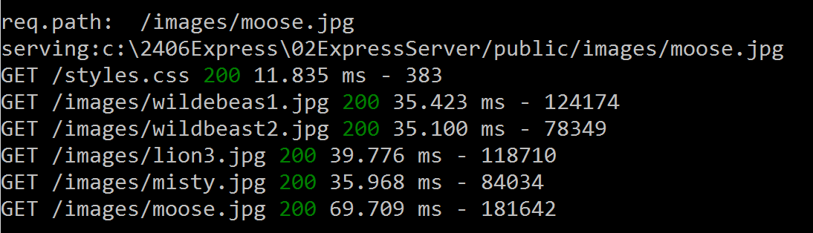
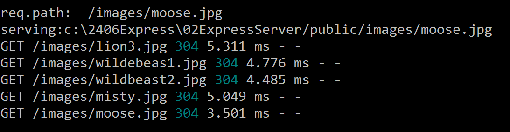

COMP 2406 - Winter 2023 Tutorial 06
Introducing Express Middleware
© L.D. Nel 2023
Revisions
revisions will be noted here.
Description:
The purpose of this tutorial is to get you started with express.js and express middleware. We will build a simple static server using two aproaches:
1) Review using node.js with its built in modules to read files from a choosen directory.
2) Using the npm module express and adding functionallity we need.
This tutorial relates to the course notes and lectures on "Introducing Express". You can learn more about express.js at this link: https://expressjs.com The notes may also contain some older chapters from books used in the past for the course, that explain some basics of express.js.
Important: tutorials are meant to be started and submitted as homework. You can come and get help each week at the your registered tutorial session but it's best to get started before the session.
Tutorial Grading: To get credit for weekly tutorials you need to submit to brightspace your code and a ReadMe.txt file with at least your name, student number and the link to your YouTube screen capture demonstration video. The video should have sound narration and demonstrate that you have met the tutorial requirements. (Make sure your video is "unlisted" and not "private" on YouTube - otherwise we won't be able to view it and it will be counted as missing. Submit a single .zip file with all your contents to Brightspace. Brightspace should allow you to resubmit your file up until the due time and will only keep the most recent submission. Grade is 0,1, or 2 as follows:
| Mark | Tutorial Grading |
|---|---|
0marks |
No submission or incomplete submission. Submissions without accompanying video get a mark of 0. Note: mark is 0 if any of the following are true:
|
1mark |
Some, but not enough, requirements met or demonstrated. Note: mark is only 1 if any of the following are true:
|
2marks |
All requirements met and demonstrated in accompanying video for required problems. Does not include problems labelled as "Optional" |
Problem 1) Static Server with Node.js Review
Open the directory 01NodeSever found in the demo code. Run the simple static server by executing
node 01_static_node_server.js
and then visit the following addresses with your browser:
http://localhost:3000/greeting.html
http://localhost:3000/index.html
http://localhost:3000/table.html
http://localhost:3000/table_css_internal.html
http://localhost:3000/table_css_external.html
These are all files found in the public subdirectory of the 01NodeServer directory.
For table_css_internal.html you should see a table that looks like the following:
Open the 01_static_node_server.js file and review the structure of the code. We will use this as a basis of comparision to express.js servers created moving forward. This code should be quite familiar to you by now.
Problem 2)
Before proceeding with the remaining problems make sure you watch the accompanying video lecture introducing express middleware.
For problem 2 we are going to use the npm express.js module to build a simple static server from scratch. We will also learn about setting up your initial package.json file.
Open the directory 02ExpressServer found in the demo code.
Try and run the server by executing:
node 02_express_static_server.js
You should get an error like the following:

The problem is that the express.js module has not yet been loaded. You could install the module with the command npm install express but instead we want to install it using a package.json file. We will start by using npm to help us generate a starting package.json file.
To generate a starting package.json file execute:
>npm init
[Important: This command does not work if you are running it from a directory that has blanks, or other unusual characters, in its path name].
You will be asked several questions to fill some of the attributes. Do this and answer the questions as shown on the screen capture below.
At this point you should have a package.json file that looks something like the following:
{
"name": "02expressserver",
"version": "1.0.0",
"description": "my first express application",
"main": "02_express_static_server.js",
"scripts": {
"test": "node 02_express_static_server.js"
},
"author": "ldnel",
"license": "ISC"
}
To learn more about how npm interprets the attributes in the package.json file see: https://docs.npmjs.com/files/package.json. You can try and run the server now by executing either:
npm test
or
node 02_express_static_server.js
Notice we now have two ways of launching our app. Again when you try and run the server you will get an error message about the missing express module.

Install the express module by executing:
npm install express
(This will install the latest version of express.js and write the dependency into your package.json file.)
The console output for the install should be something like the following:
Your package.json file should now look like the following. Notice a dependency has been added with the version number of the express module that was installed:
{
"name": "02expressserver",
"version": "1.0.0",
"description": "my first express application",
"main": "02_express_static_server.js",
"scripts": {
"test": "node 02_express_static_server.js"
},
"author": "ldnel",
"license": "ISC",
"dependencies": {
"express": "^4.18.2"
}
}
Notice the express model version number in the package.json dependencies uses optimistic version numbering (with the ^ character). This means future npm install commands may get more recent minor versions but that still have the same major version number. (i.e. the 4 must remain a 4 but the 18 might increment.)
Notice also that your directory now contains a node_modules folder that contains all the modules installed. (Express and all the modules it depends on).
Now that we have the correct express dependency in our package.json file we can use this file in the future to install the required modules. To test this do the following:
1) DELETE the node_modules directory completely.
2) Now to test our package.json file execute npm install
npm install will install all the modules in the dependencies section of your package.json file (and create the node_modules directory if necessary).
Launch the server and test it with the following:
http://localhost:3000/index.html
You should see the familiar website but no console output on the server console. Next try:
http://localhost:3000/Louis.html
This requested static file does not exist in our public directory on the server. You will notice the server code is writing some console output and the browser received a 404 status response (indicating the file was not available.) We will examine, and modify, this behaviour in the next question.
Problem 3)
Open the express server code provided in file 02_express_static_server.js it should look like the following.
const express = require('express')
const app = express()
const PORT = process.env.PORT || 3000
const ROOT_DIR = '/public' //root directory for our static pages
//Middleware
app.use(express.static(__dirname + ROOT_DIR)) //provide static server
//Routes
//catch all requests an log them using app.all route
app.all('*', function(req, res, next){
console.log('-------------------------------')
console.log('req.path: ', req.path)
console.log('serving:' + __dirname + ROOT_DIR + req.path)
next() //allow next route or middleware to run
})
//start server
app.listen(PORT, err => {
if(err) console.log(err)
else {console.log(`Server listening on port: ${PORT}`)}
})
Notice the .use middleware that implements a static server. It is just one line of code in the express application compared to all the code we previously wrote to implement a static html file server. Also we are catching all the routes not handled by the static server and printing, or logging, some request information for files that don't exist. Notice that we don't see the logging console output when serving existing static files - that is because app.all() appeared after the app.use(express.static ...). Finally there appears to be no code that sends the 404 message back to the client. This is default behaviour of the express-based server if no route is found.
You can learn more about express's built-in "static" server middleware here: https://expressjs.com/en/4x/api.html#express.static
For this problem we want to write our own middleware function to do the logging to the console on every request -even the ones for the static files.
A middleware function typically looks like the following:
function(req, res, next){
//do some stuff
next() //allow next middleware to run
}
The middleware function usually calls next() as its last statement to allow the next attached middleware to run. A middleware function could end the chain by sending a response to the client and not calling next() as well but here we want to call next() because we are just logging information and don't want to interupt the normal flow and routing of the client request.
Remove the app.all route code and replace it with the following middleware instead. Middleware is attached to the app using the .use method of the app object. The order is VERY important -it needs to go before the static server middleware because it needs to run before that. Middleware is always executed in the order of the .use statements.
To learn more about express.js visit their site at https://expressjs.com
Your server should now look like the following:
const express = require('express')
const app = express()
const PORT = process.env.PORT || 3000
const ROOT_DIR = '/public'; //root directory for our static pages
//Middleware
app.use(function(req, res, next){
console.log('-------------------------------')
console.log('req.path: ', req.path)
console.log('serving:' + __dirname + ROOT_DIR + req.path)
next(); //allow next route or middleware to run
})
app.use(express.static(__dirname + ROOT_DIR)) //provide static server
//Routes
//start server
app.listen(PORT, err => {
if(err) console.log(err)
else {console.log(`Server listening on port: ${PORT}`)}
})
Execute your new server and verify that the server console output appears for EVERY request -even the requests for files served from the public directory by the static server middleware:

Finally, add the following as the last middleware so we can handle the response for non-existing requests ourselves. Test it and demonstrate that is works.
app.use((req,res)=>{
res.status(404).send('404: OOPS YOU BROKE THE INTERNET')
})
Problem 4)
One of the most popular logging modules is an npm module called morgan.
For this problem we want you to add the morgan logger to the express server as middleware. Here are the steps:
1) Install the morgan logger such that it updates the package.json file as well:
npm install morgan
Your package.json file should now look like the following:
{
"name": "express_static_server",
"version": "1.0.0",
"description": "a simple static server built with express.js",
"main": "02_express_static_server.js",
"scripts": {
"test": "node 02_express_static_server.js"
},
"author": "L.D. Nel",
"license": "ISC",
"dependencies": {
"express": "^4.18.2",
"morgan": "^1.10.0"
}
}
2) Modify the server to require morgan as well:
const logger = require('morgan') //request logger
3) Add the logger as middleware to your server:
//use morgan logger to keep request log files
app.use( logger('dev'))
Now re-run the server. You should see the morgan logger writing output the console: (It will be interleaved with our own logger if you still have that active.)

The first time you load a file you should see the "200" success code. If you reload a file you will most likely see the "304" code as shown below. What does that mean? See if you can figure out what a "304" status code means.

The morgan logger can be used to write logs to a file instead of the console. To learn more about the morgan logger visit: https://www.npmjs.com/package/morgan
Congratulations you are now well underway to writing your own middleware and using middleware available on the npm website.
When you have completed these problems create a screen capture video, with sound, that demonstrates you've completed problem 4. Show both the web pages being loaded and the console output generated by the morgan logger. in your video. Submit your code and readme.txt file (containing your YouTube link) to brightpace.Â